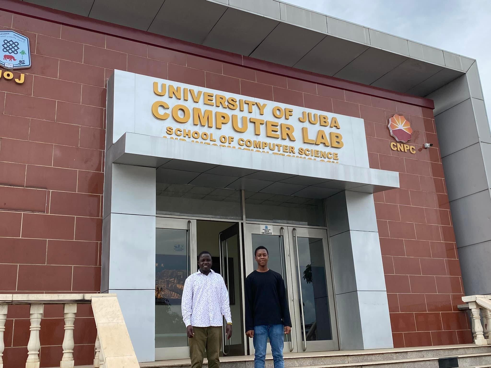
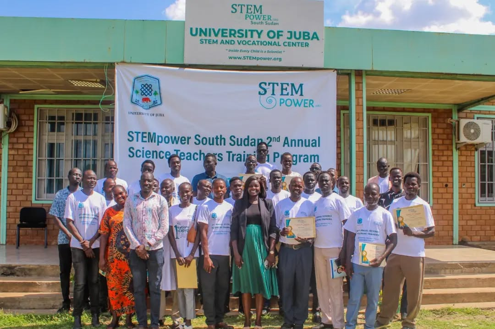

Main Computer Lab
The main computer lab is our primary teaching facility. Equiped with state-of-the art equipment and computing resources, the lab is utilized by many departments for practical training and research. Lectures and labs can be conducted in-person or virtually over vide conferencing.

Creative Space
The main computer lab is our primary teaching facility. Equiped with state-of-the art equipment and computing resources, the lab is utilized by many departments for practical training and research. Lectures and labs can be conducted in-person or virtually over vide conferencing.
